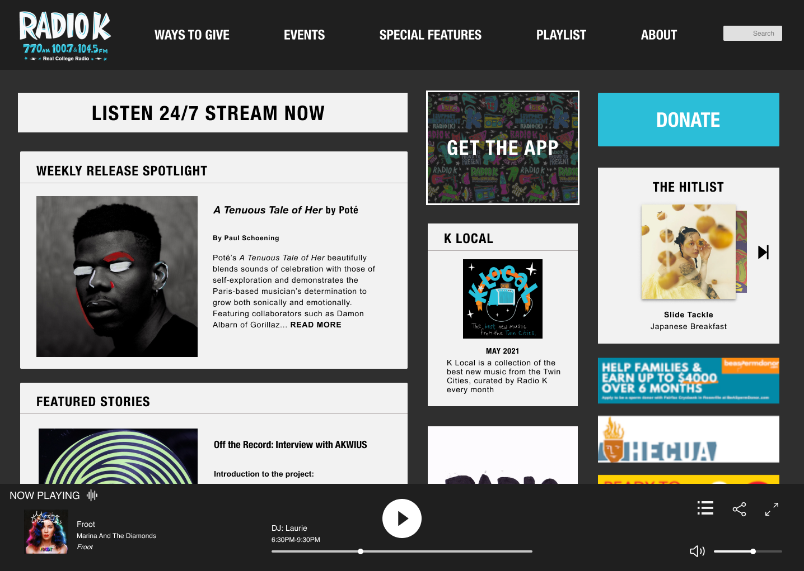
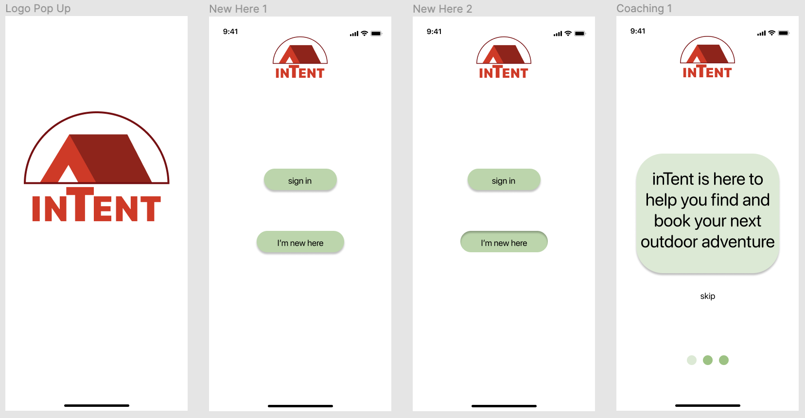
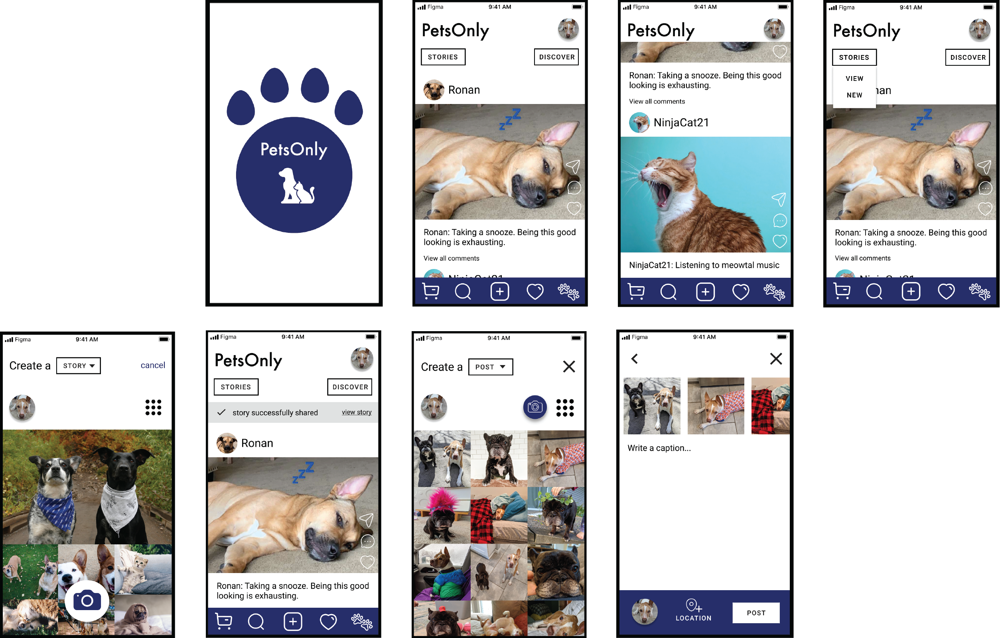

I’m Leah, a UX/UI designer with a background in graphic design and customer service. I am also a backyard gardener and pet lover whose favorite color is pink.
A team project in which we added focus and delight to the local college radio station’s eclectic web presence.
A mobile app design and onboarding sequence for a free campsite booking app and community.
The best parts of social media comes together in this mock-up mobile app for pets and their people.
